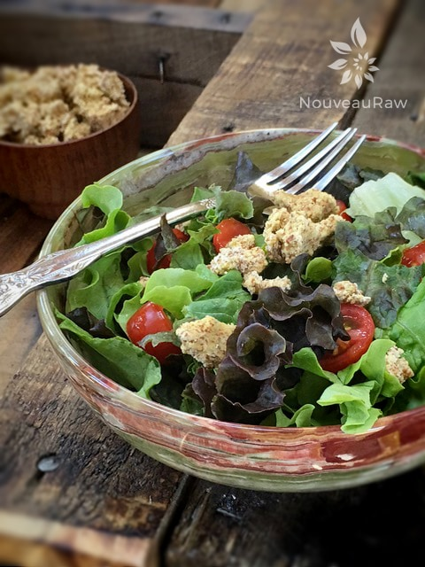

Parmesan “Cheese” Crumble -nut pulp based-

raw / vegan / gluten-free
I created this recipe because I needed to hear a crunchy sound when eating my salad. Like when you have croutons on your salad. Do you ever miss mouth-sensations? Often times my cravings are not for particular foods but instead for mouth-textures.
To be honest, I wasn’t quite sure what to title this recipe. It’s crumbly with a cheesy flavor… it’s about as simple as that.
This recipe is built upon the foundation of almond pulp, which is the by-product of making almond milk. I have another recipe on the site where you can use whole almonds as the base, but I wanted to see what I could do with the almond pulp. So, this is another version.
If you are new to nutritional yeast, it is added for the cheesy flavor, as well as for the health benefits. It’s a great source of Vitamin B for starters. If interested, please read more about it (here).
The end result… light, airy, crunchy, and savory. Frankly, I found it very difficult to not just eat the whole dehydrated tray after bringing it out of the dehydrator. It tastes wonderful just as a snack or as a topper on a salad. I hope you enjoy this simple recipe. Blessings, amie sue
Ingredients:
Yields 4 cups
Preparation:
- In a medium bowl add the almond pulp, nutritional yeast, onion and garlic powder, and salt. Mix together with your hands.
- Sprinkle the batter on the teflex sheet that comes with the dehydrator.
- Dehydrate at 145 degrees (F) for 1 hour, then reduce to 115 degrees (F) for 2-6 hours or until dry.
- Allow the crumbles to cool and then store in airtight containers on the countertop for 1-2 weeks.
Culinary Explanations:
- Why do I start the dehydrator at 145 degrees (F)? Click (here) to learn the reason behind this.
- When working with fresh ingredients, it is important to taste test as you build a recipe. Learn why (here).
- Don’t own a dehydrator? Learn how to use your oven (here). I do however truly believe that it is a worthwhile investment. Click (here) to learn what I use.

© AmieSue.com